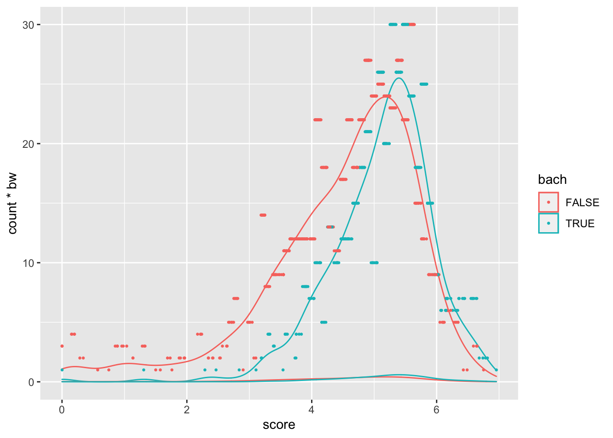

# Install and load packages ---------------
packages <- c(
"tidyverse",
"haven"
)
# Change to install = TRUE to install the required packages
pacman::p_load(packages, character.only = TRUE, install = FALSE)
# Load an example dataset ---------------
data <- read_dta("https://github.com/worldbank/r-econ-visual-library/raw/master/Library/Data/DensityWithData.dta")
data <- data %>%
filter(!(is.na(theta_mle) | is.na(roster_6a8))) %>%
mutate(
score = theta_mle - min(theta_mle),
bach = (as.numeric(roster_6a8) > 4)
) %>%
group_by(bach) %>%
mutate(tot_num = n()) %>%
ungroup()
bw = 0.1
for (i in c(0, 1)){
sub_data <- data %>% filter(bach == i)
hist_graph <- ggplot(sub_data, aes(x = score)) + geom_histogram(binwidth = bw)
hist_data <- ggplot_build(hist_graph)$data[[1]]
hist_breaks = c(hist_data$xmin, tail(hist_data$xmax, n = 1))
data$bin_score[data$bach == i] <- hist_data$count[findInterval(sub_data$score, hist_breaks)]
}## Warning: Unknown or uninitialised column: `bin_score`.head(data)## # A tibble: 6 x 11
## location_type FACILITY_ID DOCTOR_ID facility facilitycode roster_6a8 theta_mle score bach tot_num bin_score
## <dbl+lbl> <dbl> <dbl> <dbl> <dbl> <dbl+lbl> <dbl> <dbl> <lgl> <int> <dbl>
## 1 1 [Commune] 10101 1010101 NA 1 4 [Bachelors] 1.75 6.75 FALSE 575 1
## 2 1 [Commune] 10202 1020204 NA 2 4 [Bachelors] 0.161 5.16 FALSE 575 24
## 3 1 [Commune] 10303 1030301 NA 3 4 [Bachelors] -3.50 1.50 FALSE 575 1
## 4 1 [Commune] 10404 1040401 NA 4 4 [Bachelors] -0.867 4.13 FALSE 575 22
## 5 1 [Commune] 10505 1050501 NA 5 4 [Bachelors] -3.67 1.33 FALSE 575 3
## 6 1 [Commune] 10506 1050601 NA 6 6 [Specialist Level… -0.489 4.51 TRUE 428 12ggplot(data, aes(x = score, colour = bach)) +
#geom_density(aes(y = ..density.. * tot_num * bw)) +
geom_density(aes(y = ..count.. * bw)) +
geom_density() +
geom_point(aes(y = bin_score), size = 0.5) 